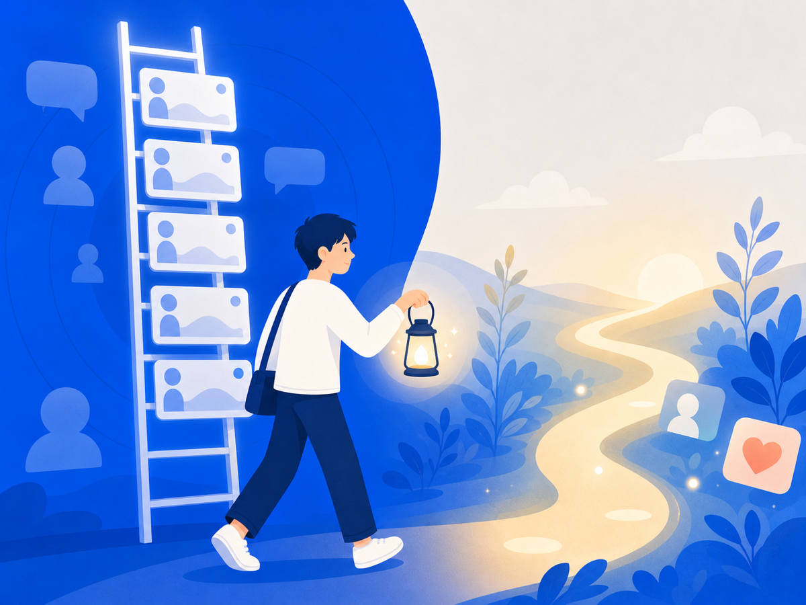

SNS 볼수록 내가 초라해지는 이유 — 비교의 함정

피드를 내리다 보면 어느 순간 마음이 뚝 떨어지죠. 누군가의 반짝이는 근황, 부러운 성과, 행복해 보이는 일상 — 그것들을 보고 나면 "나는 왜 이러나" 싶어져요. 그런데 이건 여러분이 약해서가 아니에요. 비교는 뇌가 태어날 때부터 탑재한 기능이거든요.
비교는 뇌의 기본값이에요
사회심리학자 레온 페스팅어(Leon Festinger)가 1954년에 이걸 처음 정리했어요. 사람은 자신의 능력과 판단을 측정할 객관적인 기준이 없을 때, 자동으로 옆 사람을 보며 스스로를 가늠한다는 거예요. 자로 재듯 정확하게 알 수 없으니까, 남을 거울로 삼는 거죠.
그중에서도 나보다 잘나가 보이는 사람과 비교하는 상향 비교가 특히 문제예요. 가끔은 자극이 되기도 하지만, "저 간극은 절대 못 좁힐 것 같은데"라는 생각이 드는 순간 열등감과 불안이 켜져요.
SNS는 비교를 증폭시켜요
SNS 피드가 유독 힘든 이유가 있어요. 거기 올라오는 건 편집된 인생의 하이라이트예요. 좋은 날, 특별한 순간, 성공의 증거만 골라서 올리거든요. 그걸 보면서 자신의 평범한 하루와 비교하면 당연히 내가 지는 게임이에요.
에단 크로스(Ethan Kross) 연구팀이 2013년에 이걸 직접 확인했어요. 82명의 청년을 2주 동안 추적했는데, 페이스북을 사용한 직후일수록 기분이 더 나빠졌고 삶의 만족도도 서서히 떨어졌어요. 반면 직접 만나거나 전화로 대화한 날은 오히려 기분이 좋아졌고요. 스크롤만 하는 수동적 사용이 비교를 부추기고, 그게 우울·불안으로 이어지는 경로는 이후 연구들에서도 계속 확인됐어요.
비교의 강도를 조금씩 낮추는 법
비교를 완전히 안 하는 건 불가능해요. 뇌가 원래 그렇게 생겼거든요. 대신 그 빈도와 강도를 줄이는 건 가능해요.
알림을 끄고 스크롤 시간에 경계를 두세요. 무의식적으로 피드를 여는 순간이 가장 큰 비교 촉발 지점이에요.
비교 대상을 바꿔보는 것도 도움이 돼요. "어제의 나"와 비교하면 불안 대신 작은 성장감이 생겨요.
"나 지금 부럽다", "나 지금 불안하다"고 감정에 이름을 붙여보는 것도요. 감정을 말로 표현하는 것만으로도 그 강도가 줄어든다는 신경과학 연구가 있어요. (이 이야기는 이어지는 글에서 더 자세히 다뤄요.)
오늘 해볼 수 있는 것
오늘 피드를 내리다 마음이 무거워지는 순간이 오면, 잠깐 멈추고 자신에게 물어봐 주세요. "지금 내가 뭘 보고 있는 거지?" 그 한 번의 멈춤이 비교의 고리를 끊는 첫 걸음이에요. 여러분은 충분히 괜찮은 사람이에요.
이 글은 일반 정보예요. 구체적인 일은 전문가(상담·변호사)와 상의하세요. 많이 힘들 땐 자살예방상담 109(24시간)가 있어요.